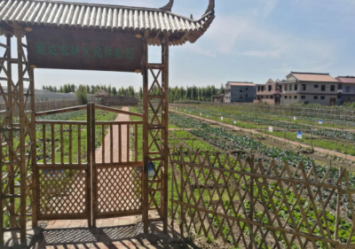
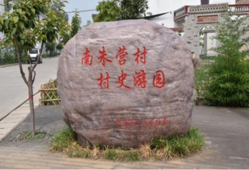
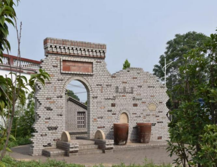

意见反馈
意见反馈
时间:2021-06-17 14:44 来源:规引团队 作者:王某某
南朱营村于2014年被定为省级贫困村，该村位于焦作市博爱县清化镇南部。南朱营村是一个自然村，北与北朱营村为邻，南于坞庄、西马营村接壤，东与寨卜昌相连，距离县城3公里，全村4个村民小组，耕地1850亩。村内无集体企业，村民的主要经济来源一靠农业，二靠运输业，有部分村民外出务工。全村总户数336户1350人，其中建档立卡户106户461人，低保户33户51人（其中纳入建档立卡户26户41人）。该村交通尚可，有一条通村公路为县道（高政路）；温县——焦作、巩义——焦作的客运班车以及博爱县的6路、16路公交车从南朱营村通过，每天15分钟一班车，群众出行有保障。
规划前村庄问题：
该地特产资源较少，没有什么特色，村民或因病因残，平均受教育程度低，缺乏技术，且没有长期发展的企业，该村的发展收到了严重的阻碍。南朱营村原来的样貌如图
规划方案：
（1）乡村产业规划：
乡村特色产业的科学发展作为乡村振兴的根本，对乡村经济的发展起着决定性作用。协助南朱营村积极发展乡村产业，旨在提高该村经济活力，培养其可持续发展的产业支撑。团队带领乡村建设脱贫带动能力强的特色产业，优化发展种植业，扶持培育新型经营主体，加强产业扶贫工程的推进。
结合南朱营村的地理区位、土地资源、传统种植和政策扶持四大优势，依托河南理工大学果蔬市场需求，团队将果蔬种植业作为南朱营村的主导产业并进行相关业务的展开，同时不断加强果蔬种植业发展的基础设施建设，完善果蔬种植业发展的机制。另外，团队前期进行实地考察，针对南朱营村村内果蔬种植情况给予科学的建议，并深入其中进行实际参与，和村民一同研究，助力其实现果蔬种植业的健康、可持续发展。
（2）乡村景观规划：
乡村具有独特的功能空间，通常具有生产区域、居住区域、集会区域和交通区域。对南朱营村不同区域景观的改造，可以改善乡村的环境，增加乡村的宜居性，同时也能吸引人流，为南朱营村的旅游业发展奠定基础。团队依据南朱营村实地情况，加强当地生态保护与建设，开展水土资源保护等措施，因地制宜，制定适合该村的规划策略。
另外，团队结合南朱营村的特色文化，对当地的特色公共场所—南朱营大舞台，进行尺寸测与墙绘设计，以文化振兴助力乡村振兴，运用公共艺术将文化元素与建筑元素进行融合，共同为南朱营村的持久性发展助力。
（3）乡村特色设计：
团队充分挖掘南朱营村的特色文化，并结合当地的产业发展情况，对该村的农产品进行包装设计。产品的精致化是特色化的延伸，美观的外形、精美的包装将对品质优良的特色农产品起到锦上添花的作用。精美的包装不仅能吸引消费者，还能有效提高农产品的价格，从而获得更高的产品效益。
针对技术短缺的问题，在2018年5月开办了“雨露计划”种植技术培训班，培训人数108人，每人每天补贴50元。并开展驾驶员技能培训，共有33人每人补贴2000元参加驾驶员培训。发放雨露计划教育补贴6人，每人1500元。通过技能培训已有106户186人实现转移就业，就业率达到 100%。除此之外，南朱营村已经成功建成120亩农业观光采摘园，并采用套种种植红薯、娃娃菜。
实施成果：
（1）特色产业成果
针对技术短缺的问题，在2018年5月开办了“雨露计划”种植技术培训班，培训人数108人，每人每天补贴50元。并开展驾驶员技能培训，共有33人每人补贴2000元参加驾驶员培训。发放雨露计划教育补贴6人，每人1500元。通过技能培训已有106户186人实现转移就业，就业率达到 100%。除此之外，南朱营村已经成功建成120亩农业观光采摘园，并采用套种种植红薯、娃娃菜。
（2）景观规划成果
经过对村内自然景观、建筑景观以及村庄基础设施的规划与建设，南朱营村村内种植园区井然有序，树木葱郁，花草种类繁多，路边随处可见修剪得当的花草。村内建筑景观也得到了极大的改善，村史游园已经成为了南朱营村的特色景点之一，村委会旁的建筑小品也极具特色，该村还有了一个150平方米的文化活动室、60平方米的农家书屋，2000平方米的文体广场。
 